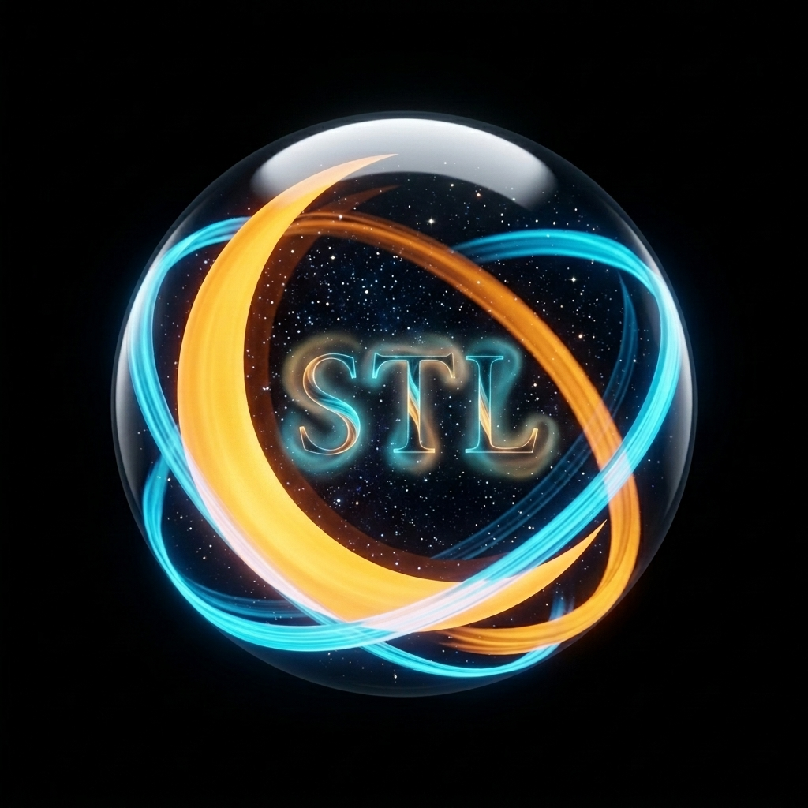

如同夜空中閃耀的星辰與皎潔的月光相遇，Stellark 是一艘承載 AI 智慧夢想與數位美學的「星月方舟 」，帶領您探索無限可能。
我們致力於將生硬的程式碼轉化為令人驚嘆的視覺饗宴，並將艱澀的 AI 知識解構成生動的學習旅程。無論您是尋求頂級網站設計的企業客戶、渴望掌握 AI 與程式技能的學習者，還是對數位行銷與影音創作充滿熱情的創作者，星月 AI x 生活 工作室 都準備好為您賦能。
點擊導覽列，探索我們的作品集、潛入 AI 學院的知識之海，或是在星月 YouTube 頻道與我們互動。讓我們一起在數位的浩瀚宇宙中，刻劃出屬於您的下一件傑作！
為客戶打造沉浸式互動網站，結合玻璃擬態與微動畫的 Master-Grade 數位工藝，讓每一個作品都是視覺與技術的藝術品。
從 Gemini 到 AI 影片製作，我們教你如何駕馭最前沿的 AI 工具，成為職場中不可取代的「AI 操控者」。
Python 數據分析、Pandas 視覺化、自動化腳本 — 用程式碼解決真實世界的問題，開啟你的工程師之路。
Master-Grade 數位工藝，每件作品都是精心雕琢的沉浸式體驗
八角旋律典藏
探索百年工藝與永恆旋律的交匯，體驗 192 幀極致絲滑的開蓋演出。
機械時光之魅
微觀視角解構古典浪漫機械表，感受「Nano Banana」精準律動與玻璃擬態介面。
遊戲實驗室
UTT-v2.0 Master-Grade 互動資產發射台，收錄 32 款經典與教育遊戲，展現極致模組化架構。
提升你的競爭力 — 從 AI 工具到程式開發，星月帶你系統化掌握關鍵技術
掌握 Gemini、ChatGPT、Midjourney 等前沿 AI 工具的實戰技巧，讓 AI 成為你的超級助手。
從腳本撰寫到成片輸出，學習 AI 驅動的高品質影像剪輯與多媒體行銷技巧。
數據分析 (Pandas, Seaborn)、自動化腳本與爬蟲實戰 — 用程式碼解鎖無限可能。
品牌推廣、社群經營、SEO 優化與行銷策略的專業實戰分享，讓你的內容觸及更多人。
每週發布精彩主題，確保你站在技術與創意的最前沿
探討 AI 如何改變各行各業的職業範疇
AI 驅動的高品質創意內容製作流程
用 Pandas 與 Seaborn 解鎖數據洞察
無論是網站設計、AI 教學合作，或是任何創意專案，歡迎與我們聯繫